Nikola Tesla
Fue un prolífico inventor e ingeniero serbio-estadounidense, fundamental en el desarrollo de la corriente alterna (CA), el motor de inducción y el sistema polifásico, permitiendo la electrificación moderna.
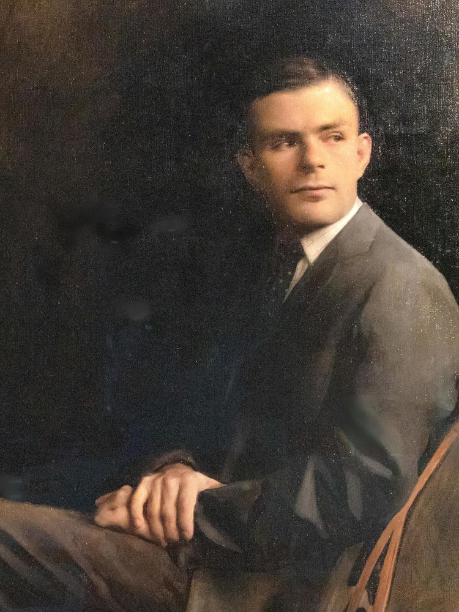
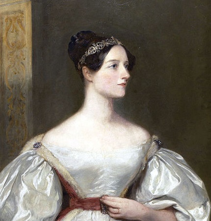
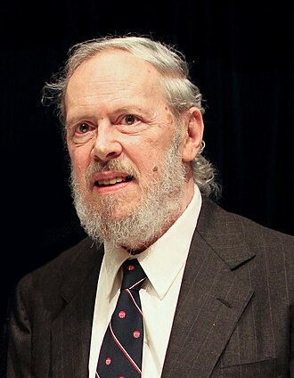
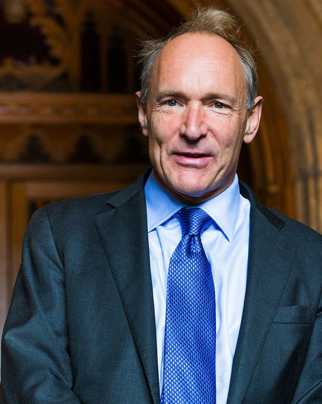
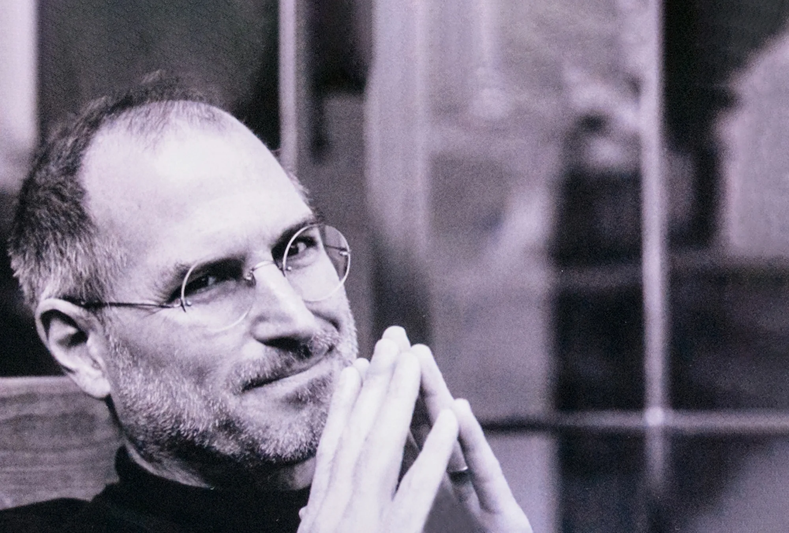
Fue un visionario empresario y cofundador de Apple Inc., reconocido por revolucionar la industria tecnológica.

Es fundador de SpaceX, cofundador de Tesla, Neuralink y OpenAI, además de propietario de la red social X.
Es un emprendedor y programador ucraniano-estadounidense, mundialmente conocido por ser cofundador y ex-CEO de WhatsApp.
Es un empresario estadounidense, cofundador y presidente ejecutivo de Netflix el gigante del streaming.
Fue una destacada ejecutiva tecnológica estadounidense, reconocida por ser la directora ejecutiva (CEO) de YouTube desde hasta principios de .
Es un programador y emprendedor estadounidense, mundialmente conocido por ser el cofundador de Instagram en 2010 junto a Mike Krieger.
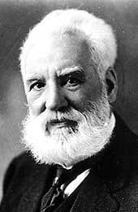
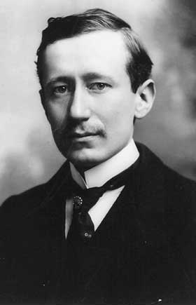

Es un reconocido psicólogo cognitivo e informático británico-canadiense, ampliamente considerado el "padrino de la inteligencia artificial".
Es un destacado científico de la computación franco-estadounidense, reconocido mundialmente como uno de los "padrinos de la inteligencia artificial" y pionero del deep learning
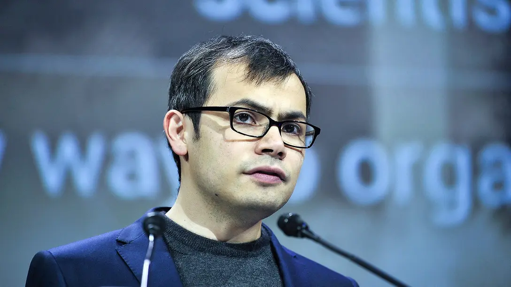
Es un informático inglés que recibió el Premio Nobel de Química 2024 por su trabajo en el uso de la inteligencia artificial (IA) para predecir las estructurasde las proteínas .
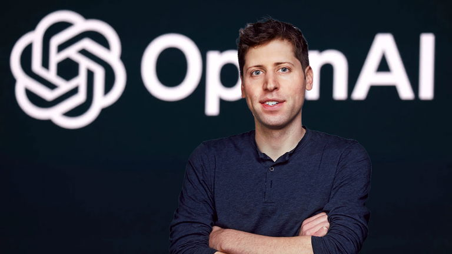
Es un destacado empresario, inversor y tecnólogo estadounidense, reconocido mundialmente como el CEO de OpenAI, la empresa detrás de ChatGPT.
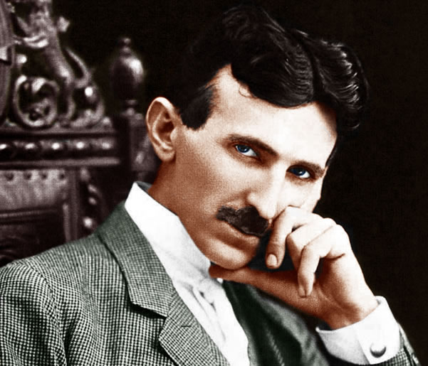
Fue un prolífico inventor e ingeniero serbio-estadounidense, fundamental en el desarrollo de la corriente alterna (CA), el motor de inducción y el sistema polifásico, permitiendo la electrificación moderna.
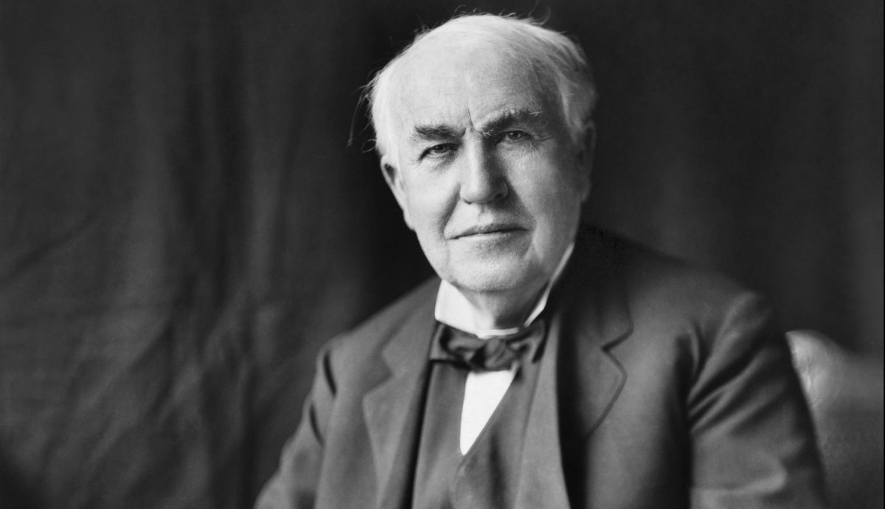
Fue un prolífico inventor y empresario estadounidense, considerado uno de los más influyentes de la historia moderna. Conocido como "El Mago de Menlo Park", registró 1,093 patentes en EE. UU.
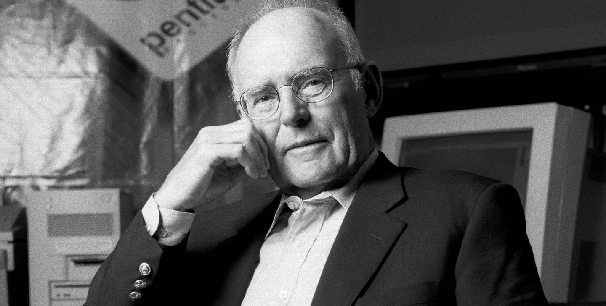
Fue un ingeniero, físico y empresario estadounidense, cofundador de Intel Corporation en 1968, pieza clave en la revolución de la computación. Es famoso por formular la Ley de Moore en 1965, la cual predijo correctamente que el número de transistores en un chip se duplicaría aproximadamente cada dos años, impulsando el avance tecnológico.

Fue una famosa actriz austriaca de la época dorada de Hollywood y una talentosa inventora autodidacta, reconocida por desarrollar la tecnología de salto de frecuencia durante la Segunda Guerra Mundial.

Es una ingeniera de redes y matemática estadounidense, reconocida como una figura clave en el desarrollo de Internet, a menudo apodada la "madre de Internet".

Es una destacada científica computacional, matemática e ingeniera de software estadounidense. Fue directora de la División de Ingeniería de Software en el MIT, donde lideró el desarrollo del software de vuelo a bordo del Programa Apolo de la NASA, siendo fundamental para el éxito del alunizaje en 1969.

Fue una matemática y física estadounidense, pionera de la NASA, fundamental para el éxito de las primeras misiones espaciales tripuladas. Calculó trayectorias clave para el vuelo de Alan Shepard y el órbita de John Glenn. Su trabajo preciso y pionero, clave en la llegada a la Luna, rompió barreras de género y raza.